Attunia
背景与问题
晚上七点，电脑合上了，通勤开始了——但脑子没有合上。未回的消息、没推完的文档，像没关干净的标签页，在地铁晃动里反复弹出。人已经离开工位，情绪还停在「未完成」。
早上九点，人已经坐进工位，咖啡也喝了——但状态还没到岗。日历第一格在闪，手指放在键盘上，却迟迟进不了第一个真正的任务。不是懒，是「还没准备好工作」的那段空白。
工作进行到半途，更难被自己看见：注意其实已经漂走，或肩颈还挂着高唤醒，人却仍对自己说「再撑一下」。走神与过劳常常没有戏剧性崩塌，只有不被意识到的损耗。
这三段落差——下班后的未完成感、上班后的未就绪感、工作中未被察觉的走神与过劳——共同指向状态切换的真空。Attunia 正是为这类 Work–Life 节奏里的真实落差而设计的 Soft Healthcare 调节产品：做日常身心调适与陪伴，明确不是诊断、处方或医疗器械。
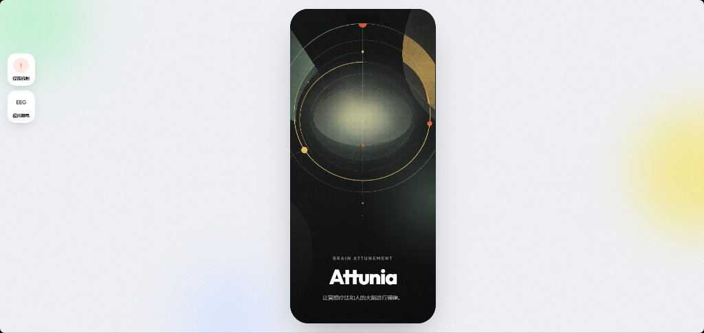
我的角色
作为产品设计师与 Agent 交互架构，我把「感知 → 理解 → 响应 → 反馈」钉成可演示的产品闭环：主导开屏 / 设备校准、六景介入、训练 Session、Tuno 对话与 Multi-Agent 会诊的体验路径；定义 Agent 人格边界、思考可视化与危机转介话术；并落地跨疗法模块的组件规范、机内合规弹层，以及 eval_No.1 / No.2 两套可跑评测。
前序探索 Anxious Kit 偏可穿戴情绪采样；Attunia 把它升级为完整 Agent 产品架构。作品集里 Anxious Kit 降为小品，主叙事走 Attunia。
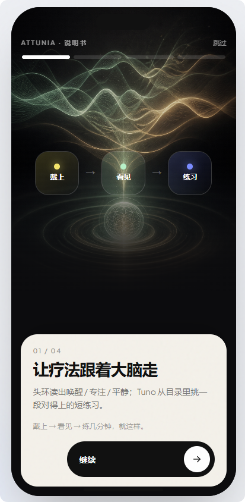
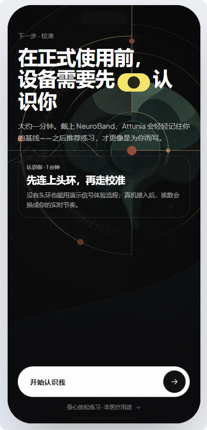
产品闭环：先把路径跑通，再谈「更像 AI」
Attunia 不是单一聊天入口。硬件侧现阶段联调 BrainLink Lite 脑电头环（架构预留多品牌接入）；无头环时可用演示信号走完流程。闭环链路是：
• 感知：脑电本机处理与基线校准
• 理解：场景选择 / Tuno 意图理解 / 工作态窗口判定
• 响应：3–10 分钟短训 Session，或会诊拼出的目录方案
• 反馈：练完复盘 + 本机记忆，反作用于后续推荐
设计原则很简单：原始脑电不上传、不进外部 LLM；Agent 只在「调节与陪伴」边界内工作；用户随时能看见推荐从何而来。

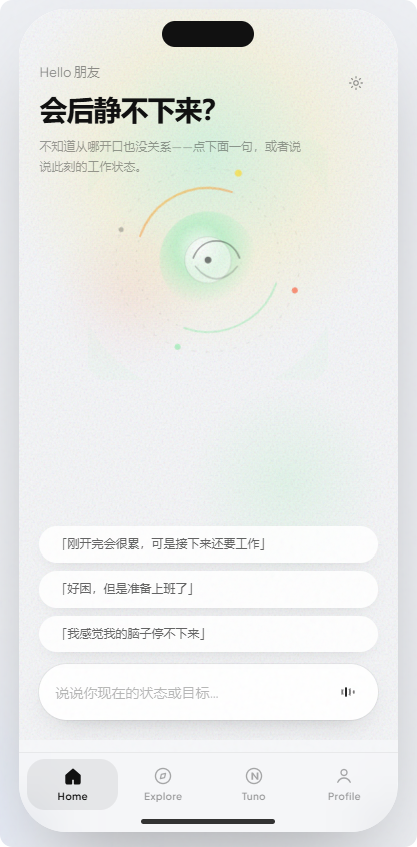

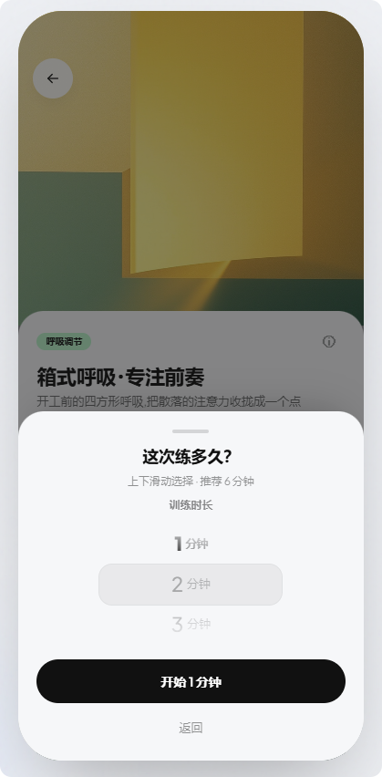
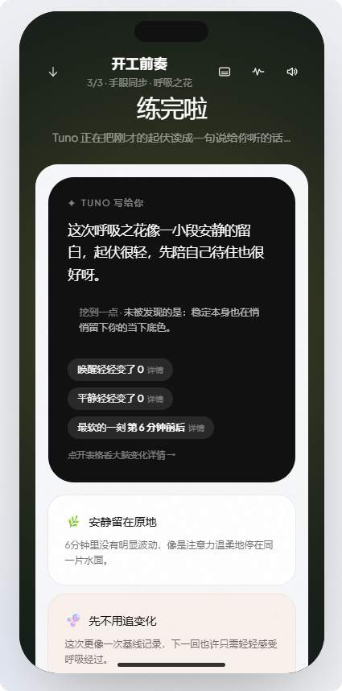
六景介入：对准上班族的节奏节点
与其做一个「万能冥想库」，我把介入钉在 Work–Life 的六个高频节点上：开工前奏、会后留白、午憩、超载减负、摸鱼回笼、下工仪式。每条路径都是选景 → 选时长 → Session → 复盘，尽量不打断一天的节奏。
场景化的价值在于降低决策成本：用户不必先搞懂自己「该减压还是该专注」，而是认领一个自己正在经历的时刻——产品再据此推荐 tempo 更匹配的练习。
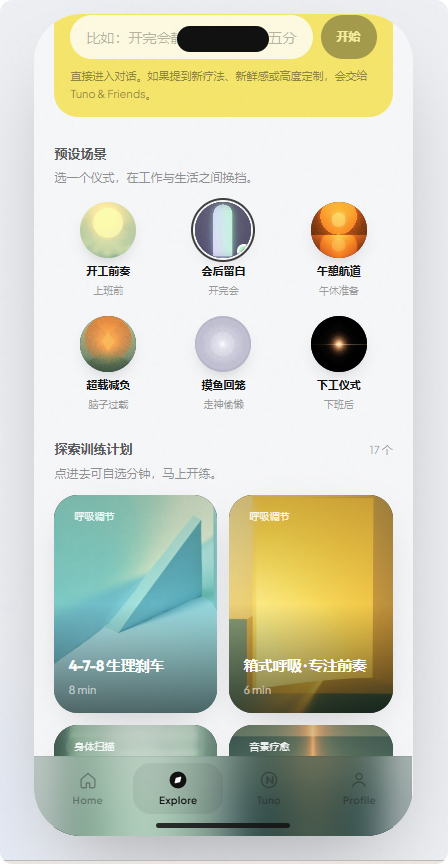
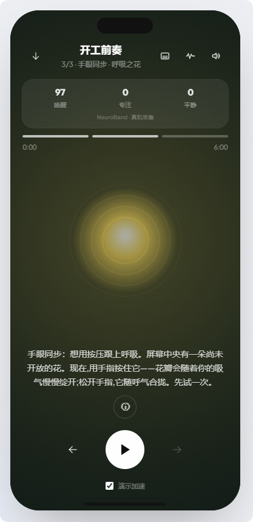
Agent 架构决策
决策一：单 Agent「Tuno」做陪伴入口，会诊是可选加深
多数时候，用户只需要说清当下状态（累、飘、睡不好），拿到一条可练的推荐。Tuno 负责意图理解、疗法导向与陪伴语气；思考链路做成可展开/折叠的可视化——在身心调节这种高信任场景里，黑盒回复不可接受。

决策二：Multi-Agent 只「拼目录」，禁止即兴创作
需要多人视角时，走「Tuno & Friends」会诊：中枢先判定训练方向与顺序（最多两步），再按擅长把环节派给专家；专家只从已有疗法目录里挑模块、调已有参数，由 Tuno 拼成一条可练方案。
明确禁止：创作新练习、生图、作曲、专家多轮互改。用户能在会诊记录里看见派工与拼接——可解释性优先于「看起来更像一群 AI 在开会」。

决策三：危机识别必须有兜底，不能只靠「温柔回复」
涉及危机词时，走安全转介话术，并指向全国 24 小时心理援助热线。Soft Healthcare 的边界写进产品行为，而不是写在页脚小字里。
设计系统 · 合规 · 评测
组件化：17 个疗法模块共用一套语言
呼吸调节、身体扫描、音景疗愈等模块，统一卡片、进度、动效与声景播放器语言。训练播放器支持多模块上一/下一与多段进度，让「目录拼装」在界面上也能被感知。
合规：机内弹层 + 渐进披露，而不是门禁式勾选
开屏/校准前用深色圆角弹层呈现「身心放松练习 · 非医疗用途」；训练页免责声明用 ⓘ 渐进披露，替代必须勾选才能开练——降低进入摩擦，同时保留告知义务。
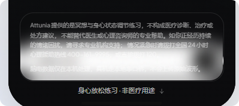
评测：用可跑的切片约束 Agent，而不是事后拍脑袋
• eval_No.1：对话 / 意图 / 危机切片
• eval_No.2：工作态 10 分钟聚合窗（超载→减压倾向 / 走神→专注回笼）
现有评测是可演示的规则与窗切片，尚非大规模脑电数据训练后的稳定状态机——这一点在对外叙事里必须诚实。
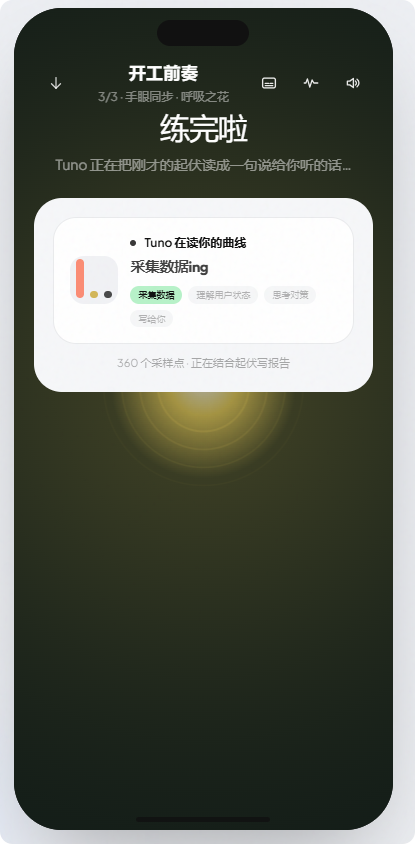
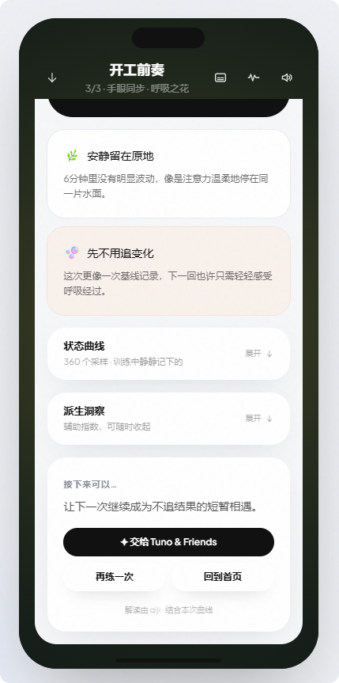
当前进展
一句话定位：Attunia = Soft Healthcare 下，对准 WLB 真空期 + 工作中走神/超负荷的脑电调律 + 美的短训与 Tuno 陪伴。
后续重点：严苛管控下的主动提醒闭环、视效/声景/轻游戏感加深、在现有 eval 上扩样本降误报。硬件形态也会探索更轻的佩戴方式。
Pitch 演示
下面嵌了 Attunia 的 pitch deck：封面可点击右侧画面轮播。需要全屏翻页时，用右上入口或这里的链接打开。
用户观察 · 一次真实使用
这段录像来自一位实际使用 Attunia 原型的 ADHD 用户。ta 的个人反馈是：在倾听产品声景 / 音乐的过程中，专注会显著更容易进入——这对 ADHD 人群并不陌生，却很少被做成可感知的产品体验。
它不是临床试验，也不是诊断结论。作为一条真实使用观察，它说明这套体验可以把「专注与冥想训练」从抽象功能，落到用户自己能感到的状态变化上。
实际用户使用原型（ADHD）· 倾听声景时的专注观察 · 含声音
反思
Agent 产品的真正瓶颈往往不是「模型够不够聪明」，而是边界清不清楚：会诊禁止即兴，是为了让输出可追溯、可验收；思考可视化，是为了让信任可建立。
关于 Soft Healthcare 温度：过度医疗化会越界；过度娱乐化会失信。Attunia 选中间态——有场景的短训、有边界的陪伴、有兜底的危机转介。
如果再做一次：更早把「提醒→开练→完成」做成可测漏斗，用采纳率而不是界面完成度来排优先级。